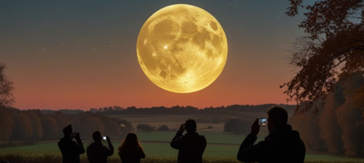
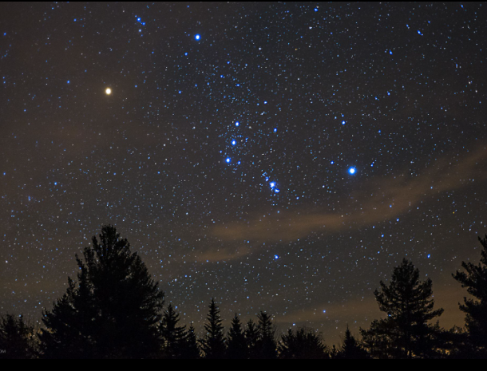

Archieves
XThat's A Big Moon!

On the night of July 18, 2024, all Marshans have gathered at Aloominous's first official moongazing event held at Ayer Keroh Recreational Forest in Malacca to catch the sight of the supermoon. The view of the moon this large was breathtaking and were sure many of our Marshans felt the same way. While the this lunar phenomenon was nothing short of incredidle, we believe the ambiance is what makes it all, truly worth it!What started of as people wanting to gather and share their passion and interest in the real world - and for us as a community was the cosmos- has now become a reality!!!
We would like to thank all 136 Marshans who have participated and committed their time and effort into this event. We hope to catch more of these astral phenomenons with you all in the future when the time is right. Take care!
Clear As Crystals

On the night September 10,2024 , The second expedition is in Miangas (North Sulawesi), indonesia in hopes to get a clear view of the Aquarius constellation. Despite the dense trees crowding the island, it doesn't hinder the islands natural beauty. From clear rivers to its unique flora, our Marshans were capturing every one of these marvelous sights on their cameras.
Miangas is not lacking in sky clearance either! We have captured many beautiful and extreme clear views of Aquarius without issue. This island makes the stars sparkles in ways big cities can't. We also can't forget the commodities offered in the homestays makes going here all the more worth visiting this side of Sulawesi for!! Hope all our 160 Marshans had as much fun as we did in Miangas in Indonesia. Thanks the natives of Miangas for so hospitable to us all. We can definitely see our coming back in the for seeable future.